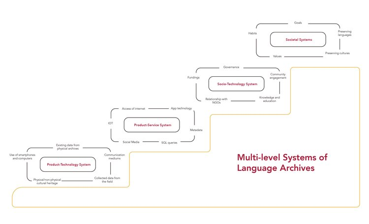
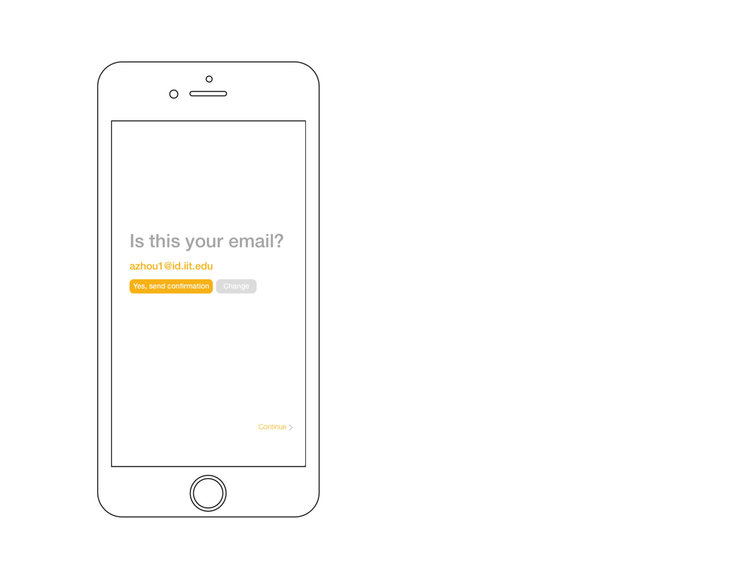
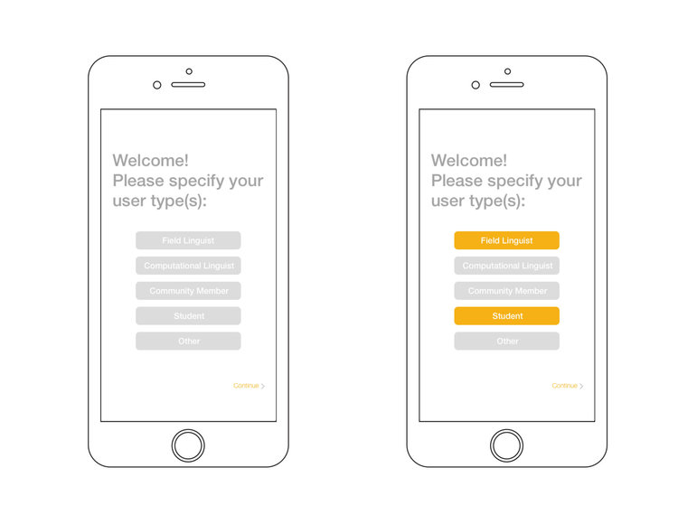
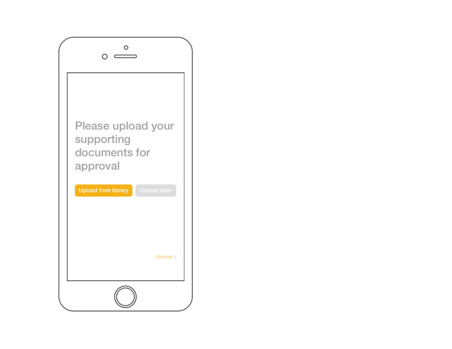
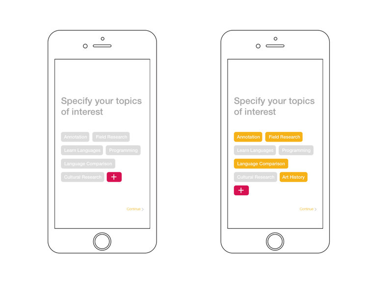
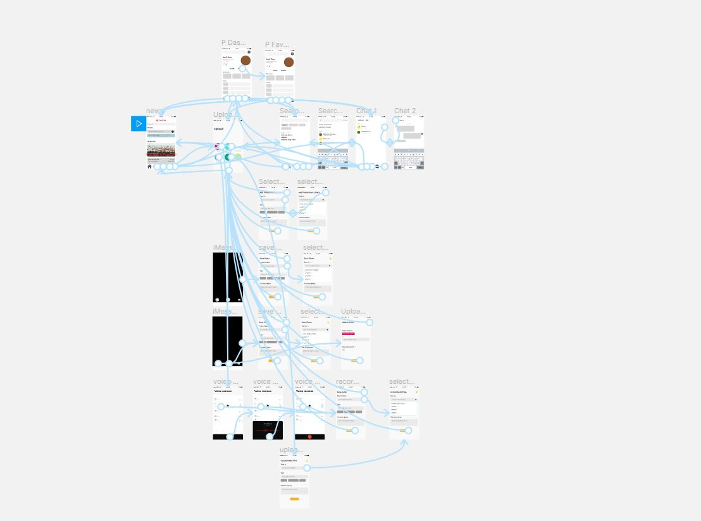
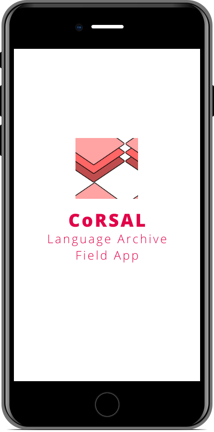

CoRSAL endangered language archive
UX Research | UX Design | Wireframes
Team: Andi Zhou, Fanny Tan, Shuyi Liu, Chris
CoRSAL, or the Computational Resources for South Asian Languages project, is an ongoing currently focused on archiving the Lamkang language which is spoken in a small region of northern India, has no written alphabet or orthography
of any kind. It is on a list of several thousand at-risk languages that could become dormant within the next half to full century.
Long term goals for the project include developing a model that can be applied to all languages like Lamkang with the hopes of creating a digital archive to preserve the legacy of world languages. This is especially challenging
since the cause of this disappearance is in part due to the proliferation of the web itself, but also the lack of internet access in places that would require it for such purposes.
The primary research was completed at University of North Texas (UNT). Partnered with the team from UNT we translated that research and extracted insights to craft UX design proposals to structure the archive.
00
Overview
What is a Digital Language Archive?
Online language archives provide the promise of long-term preservation of linguistic materials and facilitate access to these resources. The information stored may encompass diverse formats, like recordings, manuscripts, and field
notes.
These items may also contain annotations that can be complex, but only for the academic user groups. In some cases, such materials provide the only surviving record of now sleeping languages. Archival resources also document
broader cultural information, including traditional knowledge. They have been around for quite a long time.
Here are some classic archives:
Language Archive System Diagram 
01
Research
User Groups
Language Community: Lamkang Naga Tribe
The Lamkang Naga Tribe from the state of Manipur in India is the oldest of the nineteen Naga tribes. They were the ones that initiated interest in archiving their language which is unusual. Typically, language archiving
begins at the behest of researchers.
Computational Linguists
Computational lingusitics is a form of applied lingusitics that applies the techniques of computer science to language databasing, analysis, translation, and synthesis. It is a largely multi-disciplinary field that
has many goals. According to Wikipedia, it is "the scienfic study of language from a computational perspective. They are interested in providing computational models of various kinds of linguistic phenomena."
Field Linguists
These are the people on the ground collecting data to populate the archives. They plan, organize, and conduct linguistic research, and assist others to do the same. They do independent linguistic research that supports
one or more aspects of language development programs. Typically, this involves such things as phonological, morphological, syntactic and discourse analysis, working with text collections and lexical databases, and aspects
of language documentation.
Anxieties, Ambitions, Attitudes, Activities
Insights from previous research
- The project aims at tackling multiple issues at once and target too many stakeholders.
- The first version of the concept was confusing due to opaque directions and priorities.
- The available information for the computational linguists, archives manager, and community members didn’t allow to fully understand their needs.
02
Research
User Needs
Interview with Computational Linguist
We observed and interviewed a computational linguist to understand their methods of research, work flow and needs.
Insights
- Differnt users require differnt types of access.
- Sharing work in progress can be a big challenge for linguists because they have different work styles.
- Computational linguists will have difficulty accessing data.
- Authenticating membership will require additional administration support (like university libraries).
03
Design Solution
Utility App for Field Linguists
Coordinating with the website team, we needed to make sure the app wasn't simply a truncated version of the website. They have altogether different use cases and make up a product system.
The app is mainly meant to be used as a field tool and communication channel. Utilizing mesh networks, the app can be programmed to save data locally when the users are not within range of wifi or cellular channels. Once it is in range it automatically uploads the stored local data to the cloud. We strived to make the design highly visual since the language community isn't expected to speak English with the hopes to enable more direct collaboration during field work.

First Time Access
First-time users can view the archive but need to wait until their approved by the administration. However, their credentials need to be verified before they can use the mobile app.
Verifying emails
Specifying User Type
Credentials
Interests
Interaction Wireframes
Loading Screen
04
High Fi Prototype
Click for demo!

{kind=link}
{kind=link}
{kind=link}
{kind=link}
{kind=link}
{kind=link}
{kind=link}
{kind=link}
{kind=link}
{kind=link}